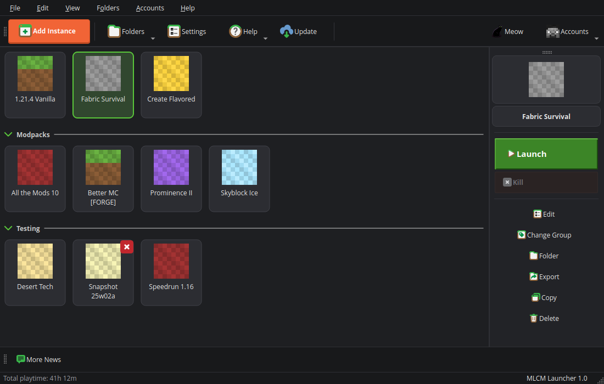
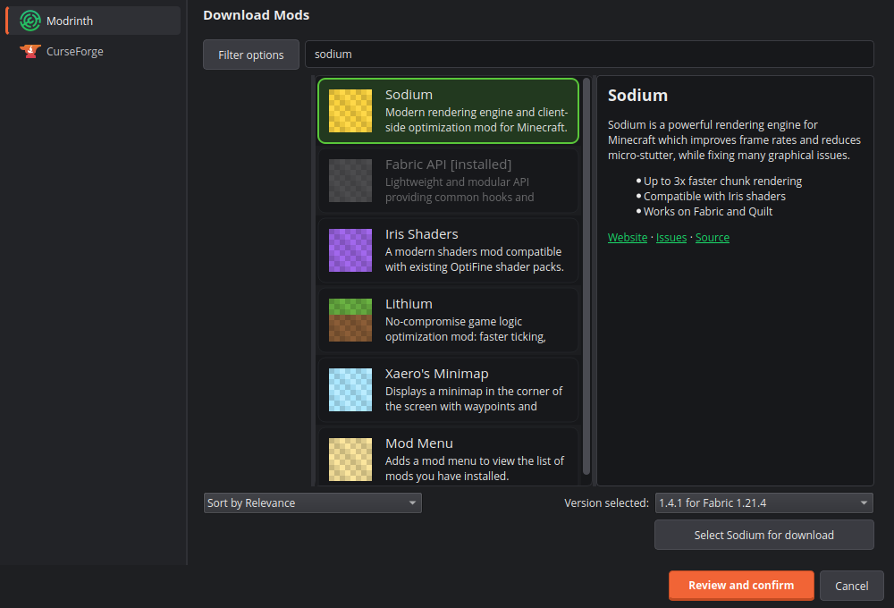
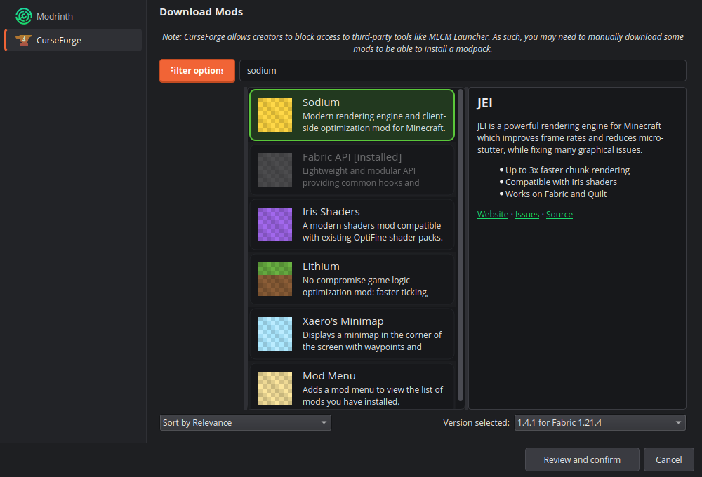
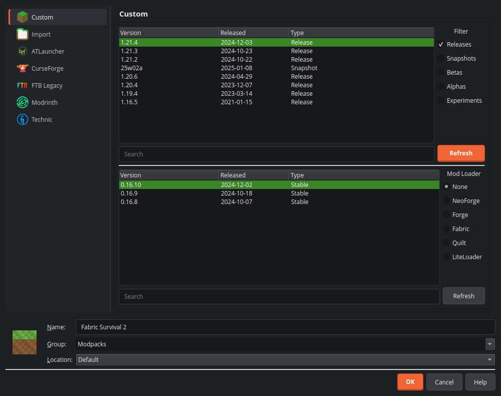
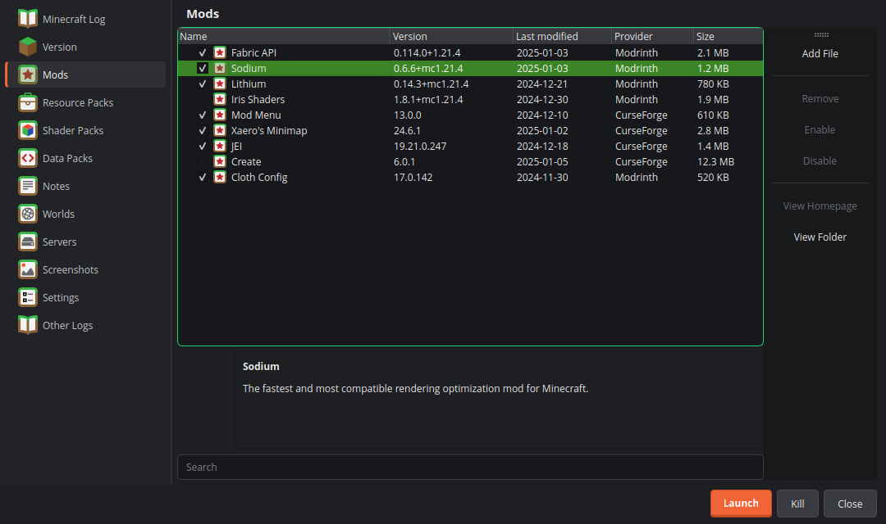
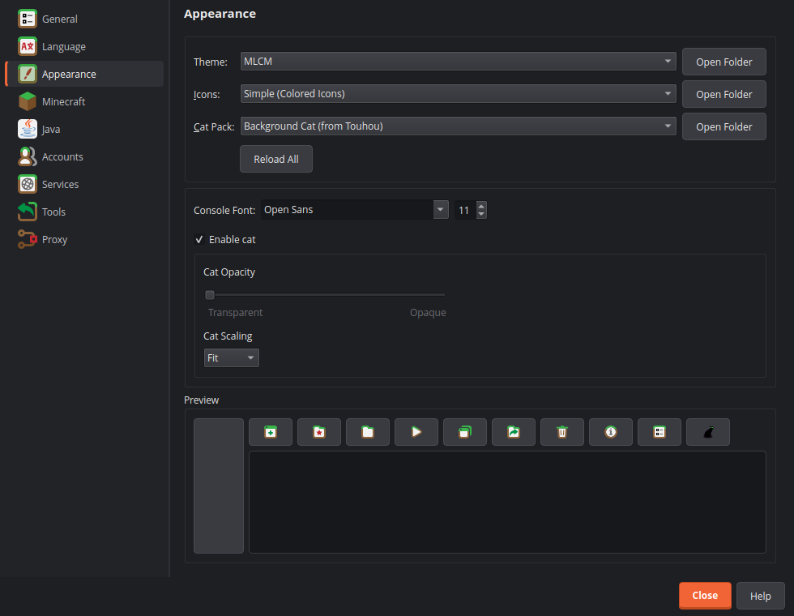

mlcmLauncher
Prism Launcher 的核心，全新的外觀。啟動、實例與模組管理一如往常，介面換成 Minecraft Launcher 風格的深色設計，再加上 CurseForge 與 Modrinth 的點綴。
Prism Launcher's engine with a fresh look. Launching, instances and mod management work like they always did — the interface is now a dark, Minecraft Launcher style design with CurseForge and Modrinth accents.

特色Features
換外觀，不換引擎A new look, the same engine
目標是改善外觀、保留 Prism Launcher 原本的版面與操作習慣。你熟悉的功能都還在原來的位置。
The goal is a better look while keeping Prism Launcher's layout and habits. The features you know are still where you expect them.
⚙Prism Launcher 核心Prism Launcher core
啟動、實例管理、模組載入、帳號登入都沿用 Prism Launcher，不做改動。
Launching, instance management, mod loading and sign-in are Prism Launcher's, unchanged.
▶Minecraft 風格介面Minecraft-style interface
深色底、圓角實例卡片、立體綠色「啟動」按鈕，一眼就知道要按哪裡。
Dark surfaces, rounded instance cards and a bevelled green Launch button.
⬇Modrinth 與 CurseForgeModrinth & CurseForge
模組瀏覽的搜尋結果改成圓角卡片，兩個平台的外觀一致。
Mod search results are rounded cards, consistent across both platforms.
⟳與 Prism 同步Sync with Prism
第一次啟動可帶入 Prism Launcher 的資料；之後用底部按鈕把新實例帶過來。
Bring your Prism Launcher data over on first start; later, the button at the bottom pulls in new instances.
▣獨立資料夾Its own data folder
資料放在 %APPDATA%\mlcmLauncher，不與 Prism Launcher 共用，兩者可以並存。
Data lives in %APPDATA%\mlcmLauncher, separate from Prism Launcher, so both can coexist.
♥免費且開源Free and open source
以 GPL-3.0 授權，建立在 Prism Launcher、PolyMC 與 MultiMC 的貢獻之上。
GPL-3.0 licensed, built on the work of Prism Launcher, PolyMC and MultiMC contributors.
截圖Screenshots
看看實際的樣子See it in action











同步Sync
從 Prism Launcher 帶資料過來Bring your data over from Prism Launcher
mlcmLauncher 有自己的資料夾，所以搬家是你主動決定的，而且不會動到 Prism Launcher 的任何檔案。
mlcmLauncher has its own data folder, so moving over is your choice — and Prism Launcher's files are never modified.
-
第一次啟動First start
偵測到 Prism Launcher 的資料夾時，會詢問是否搬過來：實例、帳號、設定、圖示等。選「否」就不會再問。
If a Prism Launcher folder is found you are asked whether to bring it over: instances, accounts, settings, icons. Choose “No” and you won't be asked again.
-
底部的同步按鈕The sync button
視窗底部有「Sync with Prism Launcher」。Prism 之後新增了實例，按一下就能帶過來。
“Sync with Prism Launcher” sits at the bottom of the window. Added an instance in Prism later? One click brings it over.
-
安全的方式Safe by design
單向（Prism → mlcmLauncher）、只新增：已存在的實例不會被覆蓋，也不會刪除任何東西。
One way (Prism → mlcmLauncher) and additive only: existing instances are never overwritten and nothing is deleted.
注意：帳號與設定只在第一次啟動時搬移，底部按鈕只處理實例、分組與自訂圖示。
Note: accounts and settings are only carried over on first start; the button handles instances, groups and custom icons.
下載Download
取得 mlcmLauncherGet mlcmLauncher
Windows（x64）Windows (x64)
從 GitHub Releases 下載最新的安裝程式或免安裝版。
Grab the latest installer or portable build from GitHub Releases.
- Windows 10 / 11（64 位元）
- Windows 10 / 11 (64-bit)
- 需要擁有 Minecraft: Java Edition 的 Microsoft 帳號才能登入遊玩
- A Microsoft account that owns Minecraft: Java Edition is needed to play
目前還沒有正式版本時，Releases 頁面可能是空的，請改用「最新建置」。
While there is no official release yet the Releases page may be empty — use the latest build instead.
FAQ
常見問題Frequently asked questions
跟 Prism Launcher 有什麼不同？How is it different from Prism Launcher?
核心功能相同，差別在外觀：新的 MLCM 主題、圓角實例卡片、大型啟動按鈕，以及從 Prism Launcher 同步實例的功能。目前只做 Windows。
The core features are the same. The differences are the look — the MLCM theme, rounded instance cards, a big Launch button — plus syncing instances from Prism Launcher. Windows only for now.
會跟 Prism Launcher 共用資料嗎？Does it share data with Prism Launcher?
不會。資料放在 %APPDATA%\mlcmLauncher，與 Prism Launcher 的 %APPDATA%\PrismLauncher 分開，可以同時安裝。
No. Data lives in %APPDATA%\mlcmLauncher, separate from Prism Launcher's %APPDATA%\PrismLauncher, so you can install both.
還能用 Prism 的圖示主題嗎？Can I still use Prism's icon themes?
可以。圖示主題（包含 iOS、flat、legacy 風格）與視窗主題是分開的設定，仍然可以自由選擇。MLCM 的配色會套在上面。
Yes. Icon themes (including the iOS, flat and legacy styles) are a separate setting and remain selectable. The MLCM colours are applied on top.
翻譯與語言呢？What about translations?
沿用 Prism Launcher 的翻譯機制，語言選單照常運作。只有 mlcmLauncher 新增的幾個字串（例如同步按鈕）目前是英文。
It uses Prism Launcher's translation system and the language menu works as usual. Only the few strings added by mlcmLauncher (such as the sync button) are English for now.
支援 Linux 或 macOS 嗎？Linux or macOS?
目前不支援，專案先專注在 Windows。需要這些平台請使用 Prism Launcher。
Not at the moment — the project focuses on Windows first. For those platforms please use Prism Launcher.
這是官方產品嗎？Is this an official product?
不是。mlcmLauncher 是獨立的社群專案，不是 Prism Launcher、Mojang、Microsoft、CurseForge 或 Modrinth 的官方產品，也沒有得到他們的背書。
No. mlcmLauncher is an independent community project, not an official product of — nor endorsed by — Prism Launcher, Mojang, Microsoft, CurseForge or Modrinth.